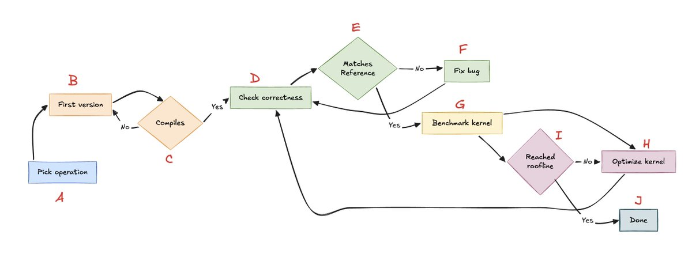

手写GPU kernel需要耐心和投入，maharshi（fal）一直在用Claude Opus 5、GPT 5.6 Sol这类大模型直接生成kernel，下面是他沉淀下来的实战经验。
核心判断：写GPU kernel是“非常容易验证”的任务，天然适合agent的可验证反馈循环。下面拆解四个嵌套回路、第一版的上下文准备、测试基准与profile方法，保留全部实操细节。
手写GPU kernel需要耐心、投入，还考验心智。maharshi一直在用现代大模型（Claude Opus 5、GPT 5.6 Sol）直接生成kernel，并总结出一套经验。核心判断是：写GPU kernel是一件"非常容易验证"的任务：有明确的正确性标准和性能标尺，天然适合放进agent的可验证反馈循环里。
结论先行：布局、索引、抽象与整体结构这些难点，在上下文给够的情况下，agent基本能解决，可把2到3周的工作压缩到1到2天。真正的瓶颈已经从"写出kernel"转移到"验证kernel"，上下文和测试框架越好，流程越快。agent不是全自主主体，而是可引导的聪明助手：人对GPU与kernel的基本功理解，依然必要。
整个方法的骨架是一个可验证循环。先定要为哪个算子写kernel（A），写出第一版（B），进编译检查（C）；编译不过回B修，过了进正确性检查（D），拿慢的参考实现做对照（E），不匹配就修bug（F）回D；正确性通过后测执行时间（G），看是否达到roofline或满意（I）；没到就优化kernel（H），回D复用同一正确性循环；到了就结束（J）。

四个回路各有分工。B↔C是开始前的紧凑小循环：编译检查。D↔E↔F是核心的可验证奖励循环：有真实参考可对照，这正是kernel开发适合自动化验证的原因。G→H→D是优化回路：每个新版本都复用同一正确性循环，快但错的kernel毫无价值。I是外层循环：决定继续优化还是停止。
流程图只是高层视角，魔鬼在细节里。下面三节分别讲：怎么让agent写出好的第一版，怎么做验证，以及怎么profile。
要让agent写出好的第一版，必须给它写出好第一版所需的全部上下文。CUDA DSL（Triton、CuTeDSL、TileLang）用Python上手容易，学习曲线比CUDA C++ 平缓，但其抽象可能让agent更困惑：需要给agent提供可查阅这些抽象的上下文。
现代大模型无需额外上下文就能写出不错的Triton代码。但CuTeDSL比Triton更细粒度、控制力更强，maharshi发现准备一个上下文目录帮助很大：把NVIDIA cutlass仓库克隆进上下文目录，供agent查阅Layout Algebra、Copy/GEMM atoms、内存层级、示例kernel。
经验标准：好的第一版应该能无明显错误地编译，并通过下文的正确性测试。第一版的质量决定整个循环的起点，上下文给够，这一步agent基本不会掉链子。
上下文给够之后，瓶颈转移到验证：参考实现本身及其对比验证越来越重要，这就是正确性测试。参考实现的速度不重要，重要的是它度量的意图：agent会针对设定的度量去优化。非低精度计算通常测最大绝对/相对误差（MAE）、均方误差（MSE/RMSE）和PSNR；涉及低精度时测PSNR和余弦相似度。
让kernel版本真正跑在GPU上，取决于GPU是本地还是云端可用，agent需要能以某种方式拿到输出。推荐用rung装饰器组织任意数量的测试函数：捕获异常，记录每个测试是ok还是FAILED（含异常类型与堆栈）。
def rung(name):\n def deco(fn):\n def wrapper(*a, **k):\n try:\n fn(*a, k)\n log(name, "ok")\n except Exception as e:\n log(name, "FAILED", type(e).__name__)\n return wrapper\n return deco\n\n# 用法："pre-checks" 跑纯检查与 DSL 检查；"run" 执行 kernel、同步 CUDA、返回输出 shape 与全有限性benchmark rung可以做三件事。第一，端到端测kernel执行总时间。第二，用kernel内追踪（自定义tracer或CUPTI）分段计时并输出。第三，把生成的IR、PTX、SASS、CUBIN转储到dumps目录让agent细读。
第三点值得展开：DSL有时降级生成次优PTX（进而是次优SASS），agent读PTX/SASS文本后，可以内联更底层的代码替代DSL的次优部分。这时提供一份"可搜索"的PTX文档作上下文很有帮助。
最后是Profiling：如果agent能访问NCU（Nsight Compute）命令行，让它在可验证反馈循环里对kernel做profile并生成报告，优化就有了数据依据。
作者自问"GPU kernel开发是不是已死"，回答是"是，但也不完全是"。是，因为布局、索引、抽象与整体结构这些难点，有足够上下文的agent基本能解决，2到3周的工作压缩到1到2天。不完全是，因为真正的瓶颈已从写kernel转移到验证环节：现在没有唯一正确做法，上下文和测试框架越好，流程越快，专用场景受益更大。好的harness就是一切。
最终提醒：不应把agent当全自主主体，而应视为可引导的聪明助手。人的部分依然必要：对GPU与kernel的基本功理解，决定了能不能给agent指对方向、看懂profile报告。作者称这是种苦乐参半的感受。
参考：https://x.com/maharshii/status/2086442755748970889